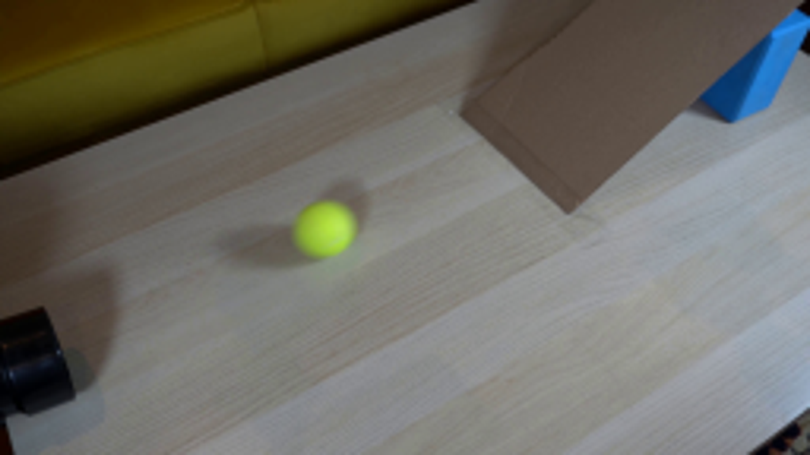
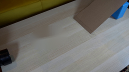
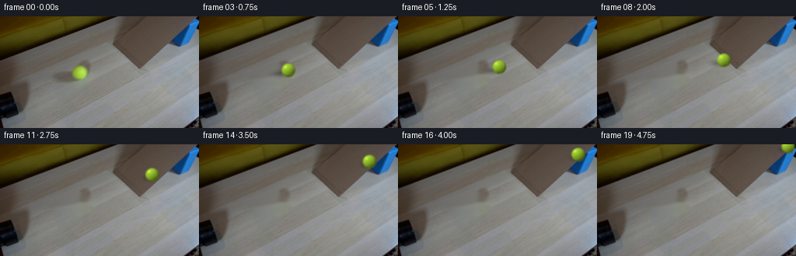
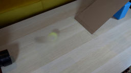
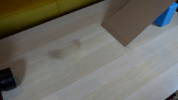
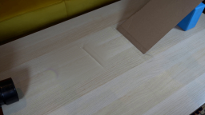

CODING AGENTS AS PIXEL WORLD MODELS
traex/GPT-5.6-Sol · 0019
点击播放 · 原生 RGB 像素
逐轮保存的候选
回放视频、检查图与代码变化。
每份候选均可单独播放。实际图片检查记录在下方工具轨迹中。
候选 01播放与检查图
点击播放 · 原生 RGB 像素

展开代码变化
--- 上一保存版本
+++ 本次保存版本
@@ -0,0 +1,133 @@
+from pathlib import Path
+import math
+import cv2
+import numpy as np
+from PIL import Image
+import artifact_io
+
+W, H = 256, 144
+HERE = Path(__file__).resolve().parent
+
+
+def ball_center(i):
+ """Analytic roll: initial visible position, then up the cardboard ramp."""
+ # The visible ball begins just outside the pipe. It rolls right on the
+ # tabletop, reaches the ramp foot, then climbs the incline toward its top.
+ if i <= 9:
+ u = i / 9.0
+ # Mild acceleration on the level and exact initial registration.
+ s = 0.28 * u + 0.72 * u * u
+ return (102.0 + 75.0 * s, 73.0 - 20.0 * s, "table")
+ u = (i - 9) / 10.0
+ # Ramp direction follows the photographed near edge (177,53)->(249,1).
+ # The climb eases as gravity opposes the motion.
+ s = 1.45 * u - 0.45 * u * u
+ return (177.0 + 69.0 * s, 53.0 - 50.0 * s, "ramp")
+
+
+def clean_plate(src):
+ """Remove only the photographed ball and its cast shadow."""
+ bgr = cv2.cvtColor(src, cv2.COLOR_RGB2BGR)
+ mask = np.zeros((H, W), np.uint8)
+ # Soft shadow trails down-left; ball itself occupies about a 20 px disc.
+ cv2.ellipse(mask, (93, 77), (29, 13), -9, 0, 360, 255, -1)
+ cv2.circle(mask, (102, 73), 13, 255, -1)
+ plate = cv2.inpaint(bgr, mask, 4, cv2.INPAINT_TELEA)
+ plate = cv2.cvtColor(plate, cv2.COLOR_BGR2RGB)
+ # Restore subdued wood grain through the repaired patch. Parallel strokes
+ # match the table's perspective and keep the plate from looking airbrushed.
+ overlay = plate.copy()
+ for k in range(-20, 45, 5):
+ x0, y0 = 68 + k, 88
+ x1, y1 = 124 + k, 55
+ col = (112 + (k % 3) * 3, 107 + (k % 4) * 2, 95 + (k % 2) * 3)
+ cv2.line(overlay, (x0, y0), (x1, y1), col, 1, cv2.LINE_AA)
+ alpha = np.zeros((H, W), np.float32)
+ cv2.ellipse(alpha, (94, 75), (34, 18), -10, 0, 360, 0.11, -1)
+ alpha = cv2.GaussianBlur(alpha, (9, 9), 0)[..., None]
+ return np.clip(plate * (1-alpha) + overlay * alpha, 0, 255).astype(np.uint8)
+
+
+def composite_ball(frame, cx, cy, phase, surface):
+ """Render a fuzzy tennis ball and physically consistent cast/contact shadow."""
+ S = 4
+ hi = cv2.resize(frame, (W*S, H*S), interpolation=cv2.INTER_CUBIC).astype(np.float32)
+ yy, xx = np.mgrid[0:H*S, 0:W*S].astype(np.float32)
+ X, Y = xx/S, yy/S
+
+ # Shadow direction follows the real first-frame light: down and left.
+ if surface == "table":
+ # Slight shortening as the ball approaches the ramp's partly shaded area.
+ q = min(1.0, max(0.0, (cx-102.0)/75.0))
+ shx, shy = cx - (11.0-3.0*q), cy + (5.0-1.5*q)
+ ax, ay, opacity = 14.0-3*q, 6.0-1*q, .27
+ else:
+ # On the ramp the ball remains in contact with cardboard; the cast
+ # shadow is compact and shifted down-slope.
+ shx, shy = cx - 5.0, cy + 4.0
+ ax, ay, opacity = 9.0, 5.0, .25
+ shadow = np.exp(-2.0*(((X-shx)/ax)**2 + ((Y-shy)/ay)**2)) * opacity
+ hi *= (1.0-shadow[...,None])
+
+ # Sphere shading sampled analytically. Radius matches the initial 20 px ball.
+ r = 10.0
+ dx, dy = (X-cx)/r, (Y-cy)/r
+ rr = dx*dx + dy*dy
+ inside = rr <= 1.0
+ z = np.sqrt(np.maximum(0.0, 1.0-rr))
+ # Key light from upper left/front, plus warm ambient table bounce.
+ L = np.array([-0.48, -0.60, 0.64], np.float32); L /= np.linalg.norm(L)
+ ndotl = np.maximum(0.0, dx*L[0] + dy*L[1] + z*L[2])
+ edge = np.clip(z*1.35, 0, 1)
+ intensity = 0.48 + 0.53*ndotl
+ base = np.zeros_like(hi)
+ base[...,0] = 151*intensity + 18*ndotl
+ base[...,1] = 194*intensity + 24*ndotl
+ base[...,2] = 42*intensity + 8*ndotl
+ # A small broad highlight, as in the source image.
+ spec = np.exp(-(((dx+.40)/.28)**2 + ((dy+.43)/.25)**2)*2.1)
+ base += spec[...,None] * np.array([34,38,18],np.float32)
+
+ # Two subtle curved seam fragments rotate as the sphere rolls. At this
+ # resolution they read as tennis-ball texture rather than graphic stripes.
+ ang = phase
+ ca, sa = math.cos(ang), math.sin(ang)
+ rx, ry = dx*ca-dy*sa, dx*sa+dy*ca
+ seam1 = np.abs(rx - (0.47 - 0.34*ry*ry)) < 0.035
+ seam2 = np.abs(rx + (0.47 - 0.34*ry*ry)) < 0.035
+ seam = (seam1 | seam2) & inside & (z > .22)
+ base[seam] = base[seam]*.76 + np.array([40,46,18],np.float32)
+
+ # Fine deterministic nap/noise, strongest away from the highlight.
+ fuzz = (np.sin(X*7.13 + Y*3.71) + np.sin(X*11.7-Y*5.2))*1.5
+ base += fuzz[...,None]*np.array([.7,1.0,.25],np.float32)
+ # Supersampled edge with a tiny fuzzy halo.
+ alpha = np.clip((1.04-np.sqrt(rr))*S, 0, 1) * edge
+ alpha *= inside.astype(np.float32)
+ hi = hi*(1-alpha[...,None]) + base*alpha[...,None]
+ out = cv2.resize(np.clip(hi,0,255).astype(np.uint8), (W,H), interpolation=cv2.INTER_AREA)
+ return out
+
+
+def main():
+ first = np.array(Image.open(HERE/'first_frame.png').convert('RGB'), dtype=np.uint8)
+ plate = clean_plate(first)
+ frames = []
+ for i in range(20):
+ if i == 0:
+ frames.append(first.copy())
+ continue
+ cx, cy, surface = ball_center(i)
+ # Rolling phase tracks travelled distance / radius.
+ if surface == 'table':
+ dist = math.hypot(cx-102, cy-73)
+ else:
+ dist = math.hypot(177-102,53-73) + math.hypot(cx-177,cy-53)
+ frames.append(composite_ball(plate.copy(), cx, cy, dist/10.0, surface))
+ frames = np.stack(frames).astype(np.uint8)
+ # Contract invariant: do not permit any processing of frame zero.
+ frames[0] = first
+ artifact_io.save(frames, HERE)
+
+if __name__ == '__main__':
+ main()
候选 02播放与检查图
点击播放 · 原生 RGB 像素

展开代码变化
--- 上一保存版本
+++ 本次保存版本
@@ -32,20 +32,24 @@
# Soft shadow trails down-left; ball itself occupies about a 20 px disc.
cv2.ellipse(mask, (93, 77), (29, 13), -9, 0, 360, 255, -1)
cv2.circle(mask, (102, 73), 13, 255, -1)
- plate = cv2.inpaint(bgr, mask, 4, cv2.INPAINT_TELEA)
- plate = cv2.cvtColor(plate, cv2.COLOR_BGR2RGB)
- # Restore subdued wood grain through the repaired patch. Parallel strokes
- # match the table's perspective and keep the plate from looking airbrushed.
- overlay = plate.copy()
- for k in range(-20, 45, 5):
- x0, y0 = 68 + k, 88
- x1, y1 = 124 + k, 55
- col = (112 + (k % 3) * 3, 107 + (k % 4) * 2, 95 + (k % 2) * 3)
- cv2.line(overlay, (x0, y0), (x1, y1), col, 1, cv2.LINE_AA)
+ # A direct inpaint leaves a dark echo of the broad source shadow. Fit the
+ # local illumination plane to clean pixels around it instead; this gives a
+ # neutral, continuous table patch without inventing a new object.
+ yy, xx = np.mgrid[:H, :W]
+ local = (xx > 55) & (xx < 138) & (yy > 47) & (yy < 105)
+ hole = ((xx-94)/35.)**2 + ((yy-75)/19.)**2 < 1.
+ samples = local & ~hole
+ x, y = (xx-96)/50., (yy-75)/35.
+ features = np.stack((np.ones_like(x), x, y, x*x, x*y, y*y,
+ x*x*x, x*x*y, x*y*y, y*y*y), axis=-1)
+ model = np.empty(src.shape, np.float32)
+ for channel in range(3):
+ coef = np.linalg.lstsq(features[samples], src[...,channel][samples], rcond=None)[0]
+ model[...,channel] = features @ coef
alpha = np.zeros((H, W), np.float32)
- cv2.ellipse(alpha, (94, 75), (34, 18), -10, 0, 360, 0.11, -1)
- alpha = cv2.GaussianBlur(alpha, (9, 9), 0)[..., None]
- return np.clip(plate * (1-alpha) + overlay * alpha, 0, 255).astype(np.uint8)
+ cv2.ellipse(alpha, (95,75), (38,22), -10, 0, 360, 1, -1)
+ alpha = cv2.GaussianBlur(alpha, (13,13), 3)[...,None]
+ return np.clip(src*(1-alpha) + model*alpha, 0, 255).astype(np.uint8)
def composite_ball(frame, cx, cy, phase, surface):

候选 04播放与检查图
可观测工具轨迹
实际执行的命令与返回图片。
命令 1exit 0
/bin/bash -lc "cat prompt.txt && printf '\\n---RULES---\\n' && cat GENERATION_RULES.md"
命令 2exit 0
/bin/bash -lc "find . -maxdepth 2 -type f -printf '%p\\n' | sort && printf '\\nTOOLS\\n' && command -v ffmpeg || true && command -v python3 || true"
命令 3exit 0
/bin/bash -lc "python3 - <<'PY'
from PIL import Image
im=Image.open('first_frame.png'); print(im.mode, im.size)
im.resize((1024,576)).save('.tmp/enlarged.png')
PY"命令 4exit 0
/bin/bash -lc "python3 - <<'PY' for x in ['cv2','numpy','PIL','scipy']: try: m=__import__(x); print(x,'yes',getattr(m,'__version__','')) except Exception as e: print(x,'no',e) import artifact_io,inspect print(inspect.getsource(artifact_io)) PY"
命令 5exit 0
/bin/bash -lc "cat > .tmp/test_clean.py <<'PY'
import cv2, numpy as np
im=cv2.imread('first_frame.png')
mask=np.zeros(im.shape[:2],np.uint8)
cv2.ellipse(mask,(91,76),(25,13),-8,0,360,255,-1)
cv2.circle(mask,(102,73),13,255,-1)
mask=cv2.GaussianBlur(mask,(3,3),0)
mask=(mask>10).astype(np.uint8)*255
for method,name in [(cv2.INPAINT_TELEA,'telea'),(cv2.INPAINT_NS,'ns')]:
out=cv2.inpaint(im,mask,4,method)
cv2.imwrite(f'.tmp/clean_{name}.png',out)
cv2.imwrite('.tmp/mask.png',mask)
PY
python3 .tmp/test_clean.py"命令 6exit 0
/bin/bash -lc "python3 - <<'PY'
import cv2,numpy as np
im=cv2.imread('first_frame.png')
for i,(c,a,ang,r) in enumerate([((96,74),(34,20),-10,5),((96,74),(38,23),-10,6),((94,74),(42,25),-10,7)]):
m=np.zeros(im.shape[:2],np.uint8); cv2.ellipse(m,c,a,ang,0,360,255,-1)
for typ,n in [(cv2.INPAINT_TELEA,'t'),(cv2.INPAINT_NS,'n')]:cv2.imwrite(f'.tmp/inp{i}{n}.png',cv2.inpaint(im,m,r,typ))
PY"命令 7exit 0
/bin/bash -lc "python3 - <<'PY'
from PIL import Image
import numpy as np
im=np.array(Image.open('first_frame.png'))
for y in [64,68,72,76,80]:
print(y,[(x,im[y,x].tolist()) for x in [94,98,102,106,110]])
PY"命令 8exit 0
/bin/bash -lc "cat > generate.py <<'PY'
from pathlib import Path
import math
import cv2
import numpy as np
from PIL import Image
import artifact_io
W, H = 256, 144
HERE = Path(__file__).resolve().parent
def ball_center(i):
\"\"\"Analytic roll: initial visible position, then up the cardboard ramp.\"\"\"
# The visible ball begins just outside the pipe. It rolls right on the
# tabletop, reaches the ramp foot, then climbs the incline toward its top.
if i <= 9:
u = i / 9.0
# Mild acceleration on the level and exact initial registration.
s = 0.28 * u + 0.72 * u * u
return (102.0 + 75.0 * s, 73.0 - 20.0 * s, \"table\")
u = (i - 9) / 10.0
# Ramp direction follows the photographed near edge (177,53)->(249,1).
# The climb eases as gravity opposes the motion.
s = 1.45 * u - 0.45 * u * u
return (177.0 + 69.0 * s, 53.0 - 50.0 * s, \"ramp\")
def clean_plate(src):
\"\"\"Remove only the photographed ball and its cast shadow.\"\"\"
bgr = cv2.cvtColor(src, cv2.COLOR_RGB2BGR)
mask = np.zeros((H, W), np.uint8)
# Soft shadow trails down-left; ball itself occupies about a 20 px disc.
cv2.ellipse(mask, (93, 77), (29, 13), -9, 0, 360, 255, -1)
cv2.circle(mask, (102, 73), 13, 255, -1)
plate = cv2.inpaint(bgr, mask, 4, cv2.INPAINT_TELEA)
plate = cv2.cvtColor(plate, cv2.COLOR_BGR2RGB)
# Restore subdued wood grain through the repaired patch. Parallel strokes
# match the table's perspective and keep the plate from looking airbrushed.
overlay = plate.copy()
for k in range(-20, 45, 5):
x0, y0 = 68 + k, 88
x1, y1 = 124 + k, 55
col = (112 + (k % 3) * 3, 107 + (k % 4) * 2, 95 + (k % 2) * 3)
cv2.line(overlay, (x0, y0), (x1, y1), col, 1, cv2.LINE_AA)
alpha = np.zeros((H, W), np.float32)
cv2.ellipse(alpha, (94, 75), (34, 18), -10, 0, 360, 0.11, -1)
alpha = cv2.GaussianBlur(alpha, (9, 9), 0)[..., None]
return np.clip(plate * (1-alpha) + overlay * alpha, 0, 255).astype(np.uint8)
def composite_ball(frame, cx, cy, phase, surface):
\"\"\"Render a fuzzy tennis ball and physically consistent cast/contact shadow.\"\"\"
S = 4
hi = cv2.resize(frame, (W*S, H*S), interpolation=cv2.INTER_CUBIC).astype(np.float32)
yy, xx = np.mgrid[0:H*S, 0:W*S].astype(np.float32)
X, Y = xx/S, yy/S
# Shadow direction follows the real first-frame light: down and left.
if surface == \"table\":
# Slight shortening as the ball approaches the ramp's partly shaded area.
q = min(1.0, max(0.0, (cx-102.0)/75.0))
shx, shy = cx - (11.0-3.0*q), cy + (5.0-1.5*q)
ax, ay, opacity = 14.0-3*q, 6.0-1*q, .27
else:
# On the ramp the ball remains in contact with cardboard; the cast
# shadow is compact and shifted down-slope.
shx, shy = cx - 5.0, cy + 4.0
ax, ay, opacity = 9.0, 5.0, .25
shadow = np.exp(-2.0*(((X-shx)/ax)**2 + ((Y-shy)/ay)**2)) * opacity
hi *= (1.0-shadow[...,None])
# Sphere shading sampled analytically. Radius matches the initial 20 px ball.
r = 10.0
dx, dy = (X-cx)/r, (Y-cy)/r
rr = dx*dx + dy*dy
inside = rr <= 1.0
z = np.sqrt(np.maximum(0.0, 1.0-rr))
# Key light from upper left/front, plus warm ambient table bounce.
L = np.array([-0.48, -0.60, 0.64], np.float32); L /= np.linalg.norm(L)
ndotl = np.maximum(0.0, dx*L[0] + dy*L[1] + z*L[2])
edge = np.clip(z*1.35, 0, 1)
intensity = 0.48 + 0.53*ndotl
base = np.zeros_like(hi)
base[...,0] = 151*intensity + 18*ndotl
base[...,1] = 194*intensity + 24*ndotl
base[...,2] = 42*intensity + 8*ndotl
# A small broad highlight, as in the source image.
spec = np.exp(-(((dx+.40)/.28)**2 + ((dy+.43)/.25)**2)*2.1)
base += spec[...,None] * np.array([34,38,18],np.float32)
# Two subtle curved seam fragments rotate as the sphere rolls. At this
# resolution they read as tennis-ball texture rather than graphic stripes.
ang = phase
ca, sa = math.cos(ang), math.sin(ang)
rx, ry = dx*ca-dy*sa, dx*sa+dy*ca
seam1 = np.abs(rx - (0.47 - 0.34*ry*ry)) < 0.035
seam2 = np.abs(rx + (0.47 - 0.34*ry*ry)) < 0.035
seam = (seam1 | seam2) & inside & (z > .22)
base[seam] = base[seam]*.76 + np.array([40,46,18],np.float32)
# Fine deterministic nap/noise, strongest away from the highlight.
fuzz = (np.sin(X*7.13 + Y*3.71) + np.sin(X*11.7-Y*5.2))*1.5
base += fuzz[...,None]*np.array([.7,1.0,.25],np.float32)
# Supersampled edge with a tiny fuzzy halo.
alpha = np.clip((1.04-np.sqrt(rr))*S, 0, 1) * edge
alpha *= inside.astype(np.float32)
hi = hi*(1-alpha[...,None]) + base*alpha[...,None]
out = cv2.resize(np.clip(hi,0,255).astype(np.uint8), (W,H), interpolation=cv2.INTER_AREA)
return out
def main():
first = np.array(Image.open(HERE/'first_frame.png').convert('RGB'), dtype=np.uint8)
plate = clean_plate(first)
frames = []
for i in range(20):
if i == 0:
frames.append(first.copy())
continue
cx, cy, surface = ball_center(i)
# Rolling phase tracks travelled distance / radius.
if surface == 'table':
dist = math.hypot(cx-102, cy-73)
else:
dist = math.hypot(177-102,53-73) + math.hypot(cx-177,cy-53)
frames.append(composite_ball(plate.copy(), cx, cy, dist/10.0, surface))
frames = np.stack(frames).astype(np.uint8)
# Contract invariant: do not permit any processing of frame zero.
frames[0] = first
artifact_io.save(frames, HERE)
if __name__ == '__main__':
main()
PY
python3 generate.py
python3 - <<'PY'
import numpy as np
from PIL import Image
z=np.load('pixels.npz')['pixels']; print('pixels',z.shape,z.dtype)
a=np.array(Image.open('frames/00.png')); b=np.array(Image.open('first_frame.png')); print('frame0 identical',np.array_equal(a,b), 'maxdiff',abs(a.astype(int)-b.astype(int)).max())
PY"命令 9exit 0
/bin/bash -lc "cat > .tmp/testclone.py <<'PY'
import cv2,numpy as np
im=cv2.imread('first_frame.png')
for typ,n in [(cv2.NORMAL_CLONE,'normal'),(cv2.MIXED_CLONE,'mixed')]:
src=im[69:121,35:97].copy() # center66,95
mask=np.zeros(src.shape[:2],np.uint8);cv2.ellipse(mask,(31,26),(29,19),0,0,360,255,-1)
out=cv2.seamlessClone(src,im,mask,(100,75),typ)
cv2.imwrite('.tmp/clone_'+n+'.png',out)
# direct feather copy affine
out=im.astype(float); yy,xx=np.mgrid[:144,:256]; a=np.clip(1-np.sqrt(((xx-100)/38)**2+((yy-75)/24)**2),0,1); a=(a*a*(3-2*a))[...,None]
# map target from source offset -34,+20
mapx=(xx-34).astype(np.float32);mapy=(yy+20).astype(np.float32);patch=cv2.remap(im,mapx,mapy,cv2.INTER_LINEAR,borderMode=cv2.BORDER_REFLECT).astype(float)
out=out*(1-a)+patch*a
cv2.imwrite('.tmp/clone_feather.png',out.astype(np.uint8))
PY
python3 .tmp/testclone.py"命令 10exit 0
/bin/bash -lc "python3 - <<'PY'
import cv2,numpy as np
im=cv2.imread('first_frame.png')
for box in [(32,82,80,126),(40,75,82,116),(45,65,87,104),(49,80,79,111)]:
x1,y1,x2,y2=box; src=im[y1:y2,x1:x2]; m=np.ones(src.shape[:2],np.uint8)*255
# ellipse
m[:]=0;cv2.ellipse(m,(m.shape[1]//2,m.shape[0]//2),(m.shape[1]//2-2,m.shape[0]//2-2),0,0,360,255,-1)
for typ,n in [(cv2.NORMAL_CLONE,'n'),(cv2.MIXED_CLONE,'m')]:
out=cv2.seamlessClone(src,im,m,(100,75),typ);cv2.imwrite(f'.tmp/cl_{x1}_{y1}{n}.png',out)
PY"命令 11exit 0
/bin/bash -lc "python3 - <<'PY'
import cv2,numpy as np
im=cv2.imread('first_frame.png')
# fitted model each channel using pixels annulus excluding dark shadow and ball, features polynomial + wood direction sinus maybe
Y,X=np.mgrid[:144,:256]
roi=(X>55)&(X<138)&(Y>47)&(Y<105)
exclude=((X-94)/35)**2+((Y-75)/19)**2<1
sel=roi&~exclude
# add feature coords poly cubic
x=(X-96)/50;y=(Y-75)/35
F=np.stack([np.ones_like(x),x,y,x*x,x*y,y*y,x**3,x*x*y,x*y*y,y**3],-1)
out=im.copy().astype(float)
for c in range(3):
coef=np.linalg.lstsq(F[sel],im[...,c][sel],rcond=None)[0]; pred=F@coef
# retain microtexture high-freq sampled shifted? no
out[...,c]=pred
# only blend ellipse
alpha=np.zeros((144,256),np.float32);cv2.ellipse(alpha,(95,75),(38,22),-10,0,360,1,-1);alpha=cv2.GaussianBlur(alpha,(13,13),3)[...,None]
out=im*(1-alpha)+out*alpha
cv2.imwrite('.tmp/poly.png',out.clip(0,255).astype('uint8'))
PY"命令 12exit 0
/bin/bash -lc "python3 - <<'PY'
import cv2,numpy as np
im=cv2.imread('first_frame.png')
Y,X=np.mgrid[:144,:256]; roi=(X>45)&(X<145)&(Y>43)&(Y<112); exclude=((X-94)/37)**2+((Y-75)/21)**2<1;sel=roi&~exclude
x=(X-96)/50;y=(Y-75)/35
F=np.stack([np.ones_like(x),x,y,x*x,x*y,y*y,x**3,x*x*y,x*y*y,y**3],-1)
model=np.empty_like(im,dtype=float)
for c in range(3):model[...,c]=F@np.linalg.lstsq(F[sel],im[...,c][sel],rcond=None)[0]
# noise residual from source shifted and tiny gaussian textures
smooth=cv2.GaussianBlur(im,(0,0),2).astype(float); residual=im.astype(float)-smooth
for dx,dy,n in [(-42,24,'a'),(-20,30,'b'),(34,24,'c')]:
tex=np.roll(residual,(dy,dx),(0,1)); pred=model+tex*.55
alpha=np.zeros((144,256),np.float32);cv2.ellipse(alpha,(95,75),(39,23),-10,0,360,1,-1);alpha=cv2.GaussianBlur(alpha,(15,15),4)[...,None]
out=im*(1-alpha)+pred*alpha
cv2.imwrite('.tmp/poly_'+n+'.png',out.clip(0,255).astype('uint8'))
PY"命令 13exit 0
/bin/bash -lc "python3 generate.py && python3 - <<'PY'
import numpy as np
from PIL import Image
f=np.stack([np.array(Image.open(f'frames/{i:02d}.png')) for i in range(20)])
assert f.shape==(20,144,256,3) and f.dtype==np.uint8
assert np.array_equal(f[0],np.array(Image.open('first_frame.png')))
print('validated',f.shape,f.dtype,'frame0 exact')
PY"视觉工具实际返回图片 1

视觉工具实际返回图片 2

视觉工具实际返回图片 3
视觉工具实际返回图片 4
视觉工具实际返回图片 5

视觉工具实际返回图片 6

视觉工具实际返回图片 7

视觉工具实际返回图片 8
视觉工具实际返回图片 9

视觉工具实际返回图片 10

视觉工具实际返回图片 11
视觉工具实际返回图片 12

视觉工具实际返回图片 13

保存候选 4 份；完成命令 13 次；可验证图片返回 13 张。原始 API 响应与完整日志保留在本地。